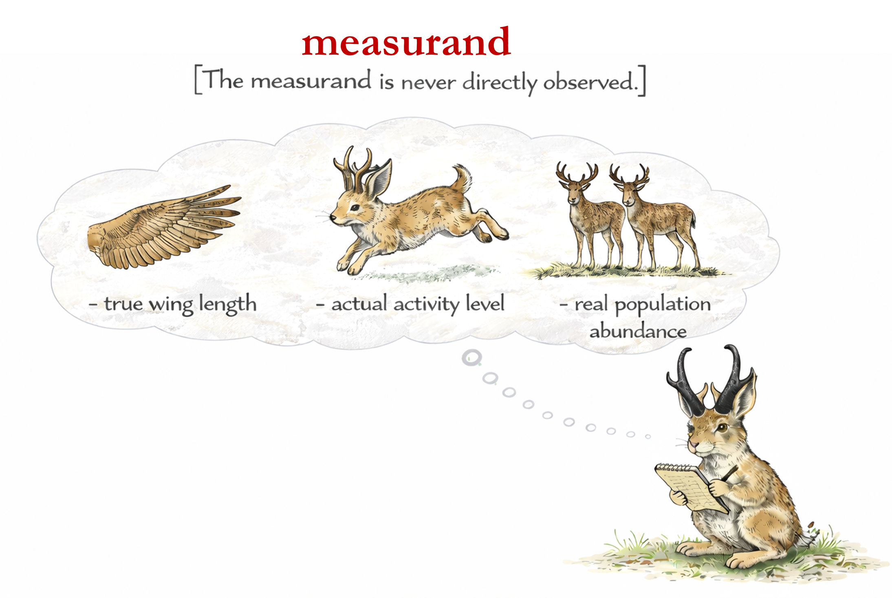

12 The Nature of Data
12.1 Introduction
Understanding the nature of your data is the first real step toward defensible ecological inference.You were asked to come into this course with a dataset in hand. Some of you have undoubtedly arrived with very well-organized spreadsheets. Others have long lists of folders full of raw sensor outputs, GIS layers, audio files, camera-trap images, or field notes that only you can currently interpret. All of that is perfect for this course.
Before we analyze anything, however, we need to be precise about three things:
- What measurements represent
- What data are
- What we are actually trying to estimate
Most scientific confusion comes from mixing these three up. If you do not understand these three critical components, no amount of fancy R coding will save your analysis.
So, we begin where all data originate: measurement. And, for that, it helps to start with a brief introduction to the field of metrology.
12.2 Metrological Terminology
Metrology is simply the science of measurement. Whereas it has traditionally focused on the physical sciences and engineered systems, it applies just as much to biology and its messier subfields (e.g. ecology) as it does to physics or chemistry.
Metrology establishes a formal framework for ensuring that scientific measurements are traceable to standards, reported with uncertainty, and reproducible across space, time, and observers. Crucially, this framework operates upstream of analysis—at the moment when information about the world are collected an raw data are generated. Metrology naturally integrates with our discussion of reproducible analyses because, instead of a number standing alone, a measurement comes bundled with information about what it was trying to measure, how reliable it is, and what assumptions were made along the way. That lets future researchers decide whether datasets are truly comparable, whether old data can answer new and exciting questions, and how much trust researchers should place in a result without having to guess what the original researcher meant.
Two term must be clearly differentiated from measurements and estimates. These terms are:
- measurand
- estimand
The suffix –and comes from Latin –andus
(“that which is to be acted upon [a target]”)
| Target (–and) | Result |
|---|---|
| Measurand | Measurement |
| Estimand | Estimate |
12.2.1 Measurand!
The theoretical quantity of interest in the world to be measured.
A measurand:
- exists independently of observers
- is defined conceptually, not instrumentally
- is the quantity you wish you could measure directly
Examples:
- true wing length
- actual activity level
- real population abundance

The measurand is defined before measurement and never directly observed.
Short answer: Almost never—and that is normal science.
12.2.2 Estimand! (the missing precision tool)
The quantity that a statistical model is designed to estimate, given the available data.
Though we will discuss estimands at length later in the course during the modeling exercises, it helps to discuss it in the context of measurands. An estimand:
- is defined by both the scientific question and the analysis model
- depends on the data, measurement process, and assumptions
- is the quantity you can actually estimate from the data
Examples:
- mean wing length in the sampled population
- expected activity level given detection and sampling design
- estimated population abundance under a specified model

The estimand is defined before analysis, depends on modeling choices, and is not the same as the measurand.
12.3 Summary: Measurand vs Estimand
| Concept | Measurand | Estimand |
|---|---|---|
| Nature | Conceptual / scientific | Formal / statistical |
| Exists without data? | Yes | No |
| Depends on model? | No | Yes |
| Defined when? | Before measurement | Before estimation |
12.4 What are data?
Only after measurement do we get data, the recorded outputs of those measurement processes. To understand what is meant by data, let us consult a dictionary first. Two definitions from the Merriam-Webster Dictionary—188 years apart—are especially revealing:
Modern usage treats data and information as synonymous. But scientifically, this is misleading.
Data are observed facts. Information is what we extract from those facts using models and assumptions.
We do not collect information. We collect data, and then we extract or create information. This distinction is critical for reproducibility.
12.5 Raw data
Because measurands cannot be observed directly and estimands depend on how data are generated and modeled, raw data are the critical link between scientific questions (filled with measurands) and strong inference. Raw data preserve the closest recorded traces of the measurement process, making it possible to understand how observations relate to the underlying measurand and what estimands the data can actually support.
By now, we have all been conducting formal scientific inquiry for many years. It is common to see folders labeled /raw_data/ that contain offloaded sensor files or spreadsheets transcribed from field notebooks. These data may feel “raw,” but often they are not.
Raw data are the facts produced by an instrument or observer through a domain-specific translation, recorded at the time of observation, and preserved without post-hoc modification.
When we offload data from a sensor or transcribe notes into a spreadsheet, our actions have a non-zero probability of influencing the data.
Examples of raw data include:
- audio waveforms recorded at a study site (on the device)
- GPS locations logged by a collar (not yet downloaded)
- counts written on a datasheet (not yet transcribed)
- pixel values collected by a camera sensor

- Raw data are not clean, tidy, or analysis-ready
- Processed tables and summaries are not raw data
- Raw data are not the truth—they are translated observations
- Raw data are not limited to numbers
- Messiness does not imply poor data quality
- Early processing choices permanently change the data
Raw data are the foundation of all scientific analysis. On their own, however, they are incomplete. To be interpretable, reusable, and reproducible, raw data require context.
That context comes from metadata, which are introduced on the next page. Keeping the focus here on raw data helps avoid mixing observations of the world with explanations about how those observations were produced. Metadata play a different conceptual role, and treating them separately keeps that distinction clear.